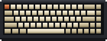
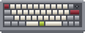
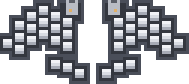
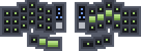

So who am I? I'm a programmer, a gamer, I ride bikes around, and I love tinkering with my computers (I may have modeled this page after neovim, btw).
I've always been into gaming, tech and computer hardware, and I started picking up programming on my own while I was working as a photo editor. The creative side of problem solving got me hooked, so I decided to make a career and a hobby out of it!
Interests
My thing for mechanical keyboards started out innocently enough, with a fairly normal Keychron K6 for gaming. Getting into programming made it a lot worse (or better, depending on who you ask). When you spend all day typing, you start caring a whole lot about what you're typing on, and I've since gone down the rabbit hole of smaller, more ergonomic boards: the Keychron Q9, the TOTEM by GEIST and the open source Corne split keyboard.

PBTfans 1984

SA Retro

KLP Lame

KAM Superuser
Technologies
The technologies I'm familiar with are (in no particular order):
- Languages
- Python
- Java
- JavaScript
- TypeScript
- C#
- Rust
- Kotlin
- Web
- HTML/CSS
- React
- Node.js
- .NET
- REST / GraphQL APIs
- Svelte
- Mobile
- Android
- iOS
- Data
- SQL
- NoSQL
- Cloud & DevOps
- Docker
- CI/CD
- Linux / Unix
- Tools & practices
- Git / GitHub
- Testing
- Agile / Scrum
- AI
Currently Enjoying
lorem